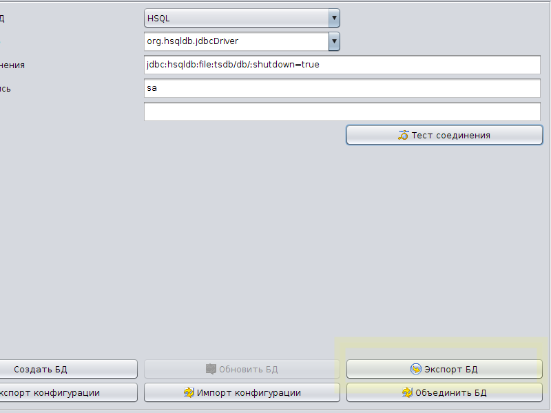
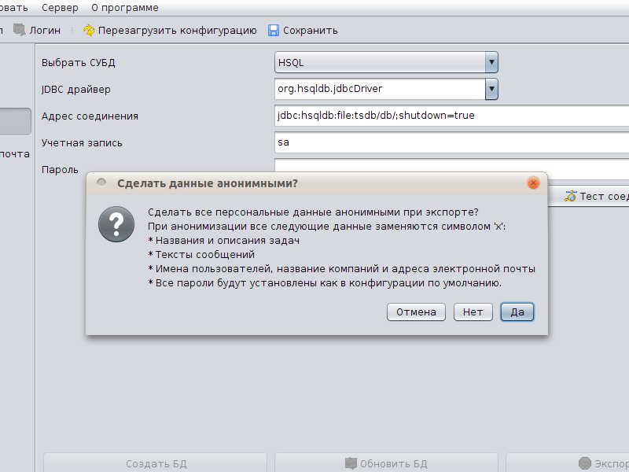
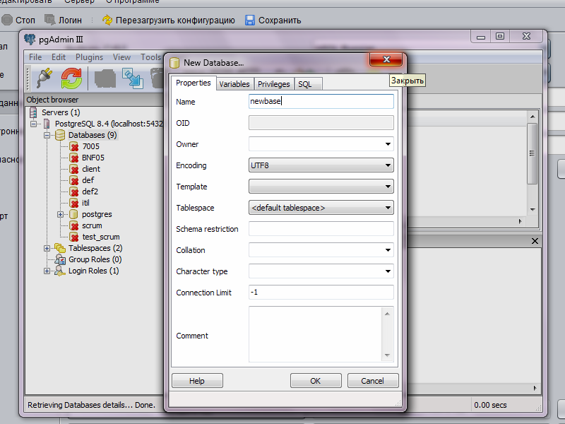
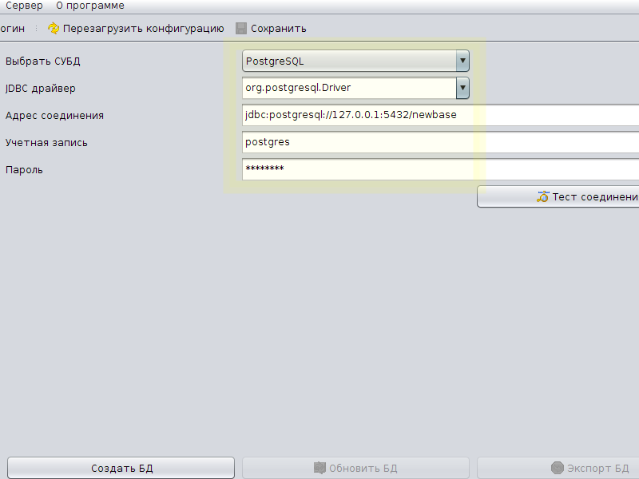
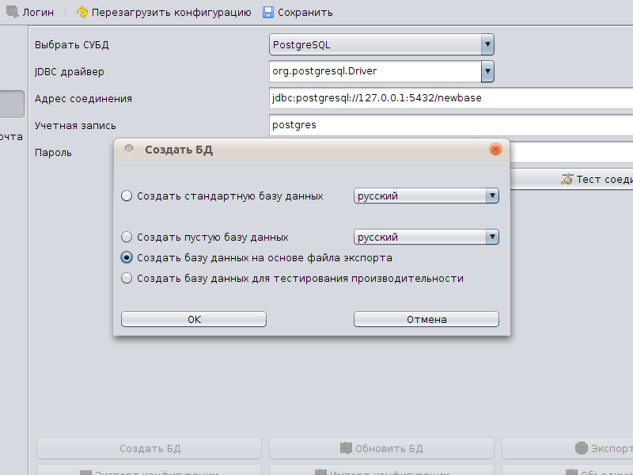
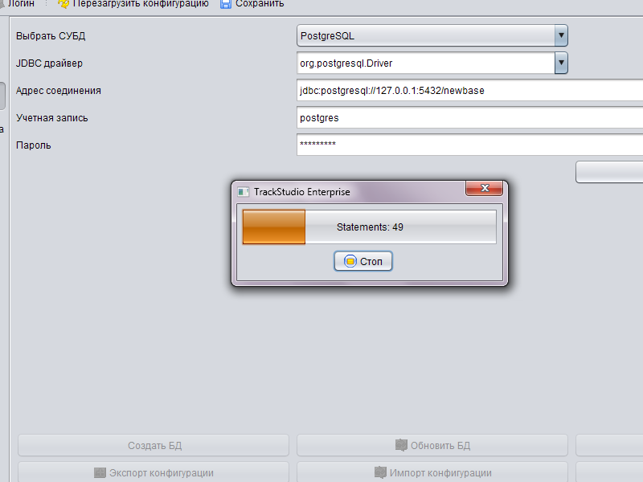
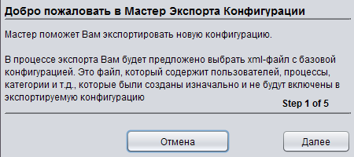
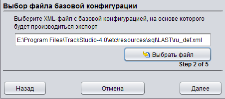
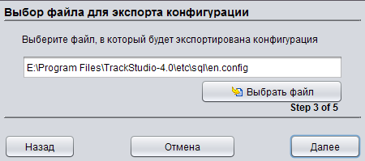

|
<< Click to Display Table of Contents >> Navigation: Rus > Руководство по установке > Создание и настройка базы данных > Экспорт и импорт базы данных. Миграция |
Внимание! Приведенный ниже механизм переноса данных предназначен для переноса только между одинаковыми версиями TrackStudio 4. Для обновления с версии 3.5 и более ранних используйте механизм обновления.
В TrackStudio перенос базы данных с одной СУБД на другую (например, с Hypersonic SQL на PostgreSQL), равно как и перенос базы данных на другой сервер осуществляется с помощью поставляемой в версии Standalone утилиты Server Manager (она же "Управление сервером TrackStudio Enterprise" или попросту SMAN)
На серверах под управлением ОС GNU/Linux не всегда есть возможность завести графический интерфейс. В этом случае вы можете использовать консольную утилиту для экспорта и импорта данных
Для того, чтобы экспортировать вашу базу данных, остановите TrackStudio. После этого в Server Manager на вкладке База данных станет доступна кнопка Экспорт БД. Нажмите ее.

Вам предложат автоматически убрать при экспорте персональные данные. Это нужно сделать, если мы запросили у вас "анонимный бэкап" или что-то подобное для решения возникших у вас проблем. Если вы экспортируете данные для собственных нужд (например, для резервной копии) - делать их анонимными их не нужно.

Когда вы определитесь, какой именно экспорт вам нужен, система попросит выбрать место для сохранения экспортируемых данных. Их можно хранить в форматах XML, zip и bzip2. Файл экспорта в формате XML может занимать очень много места на диске. Формат bzip2 сжимает лучше всего. Используйте этот формат, если планируете затем импортировать данные обратно в TrackStudio. Наличие архиватора не требуется.
Импорт данных из файла экспорта возможен только в новую пустую базу.
Создайте новую базу данных средствами вашей СУБД.

Затем укажите в настройках Server Manager новые параметры соединения

Нажмите кнопку Тест соединения. Если соединение пройдет удачно, вам станет доступна кнопка Создать БД. Нажмите ее.

Выберите файл с данными. После этого система начнет импортировать их в новую базу.

По окончанию импорта вы сможете запустить TrackStudio и использовать ее уже с новыми данными.
Для миграции с одной СУБД на другую просто экспортируйте ваши данные с помощью Server Manager из имеющейся СУБД, затем настройте соединение с новой СУБД и импортируйте данные в новую пустую базу.
С помощью конфигураций вы можете переносить задачи, пользователей, а так же настройки системы с тестового сервера на рабочий. Идентификаторы всех объектов при этом сохраняются. Для экспорта текущей конфигурации нажмите кнопку Экспорт конфигурации на вкладке База данных.
При экспорте конфигурации текущее состояние вашей базы данных будет сравниваться с неким начальным состоянием. Для этого сравнения вам понадобится существующий файл экспорта. Для базы данных по-умолчанию это ru_def.xml из папки etc/resources/sql/LAST. Если же вы импортировали данные из какой-то другой базы, а затем поменяли их - укажите ваш исходный файл экспорта.



Пройдя через все этапы мастера экспорта конфигурации вы получите файл с расширением config - это и есть ваша конфигурация.
Вы можете импортировать конфигурацию в уже существующую у вас базу данных, если она была создана на основе того же файла экспорта, что конфигурация. Для импорта нажмите кнопку Импортировать конфигурацию на вкладке База данных и выберите файл с конфигурацией.